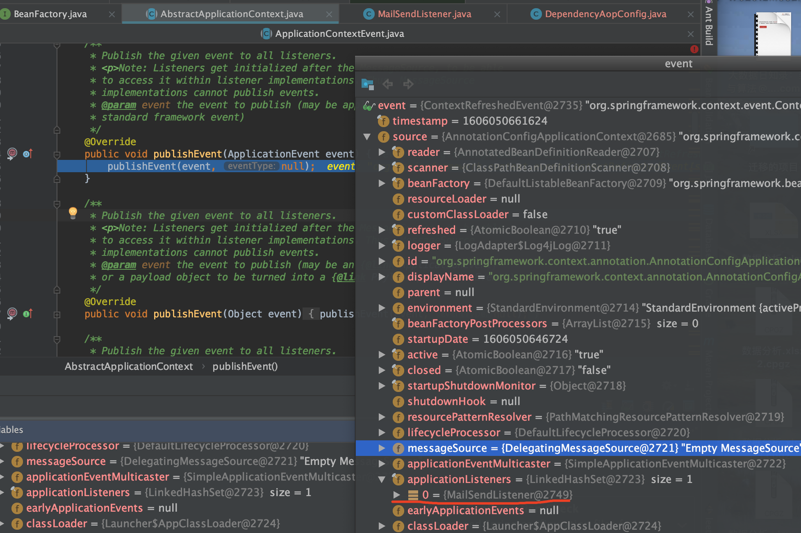

TreeviewCopyright @doctording all right reserved, powered by aleen42
事件发布和监听机制
在一个完整的事件体系中，除了事件和监听器以外，还应该有3个概念；
- 事件源：事件的产生者，任何一个event都必须有一个事件源；
- 事件广播器：它是事件和事件监听器之间的桥梁，负责把事件通知给事件监听器；
- 事件监听器注册表：就是spring框架为所有的监听器提供了一个存放的地方；
事件类：ApplicationEvent
ApplicationEvent唯一的构造函数是ApplicationEvent（Object source），通过source指定事件源
/**
* Class to be extended by all application events. Abstract as it
* doesn't make sense for generic events to be published directly.
*
* @author Rod Johnson
* @author Juergen Hoeller
*/
public abstract class ApplicationEvent extends EventObject {
/** use serialVersionUID from Spring 1.2 for interoperability. */
private static final long serialVersionUID = 7099057708183571937L;
/** System time when the event happened. */
private final long timestamp;
/**
* Create a new ApplicationEvent.
* @param source the object on which the event initially occurred (never {@code null})
*/
public ApplicationEvent(Object source) {
super(source);
this.timestamp = System.currentTimeMillis();
}
/**
* Return the system time in milliseconds when the event happened.
*/
public final long getTimestamp() {
return this.timestamp;
}
}
abstract class ApplicationContextEvent 容器事件(事件源是ApplicationContext)
public abstract class ApplicationContextEvent extends ApplicationEvent {
/**
* Create a new ContextStartedEvent.
* @param source the {@code ApplicationContext} that the event is raised for
* (must not be {@code null})
*/
public ApplicationContextEvent(ApplicationContext source) {
super(source);
}
/**
* Get the {@code ApplicationContext} that the event was raised for.
*/
public final ApplicationContext getApplicationContext() {
return (ApplicationContext) getSource();
}
}
class RequestHandledEvent extends ApplicationEvent
一个与Web应用相关的事件，当一个请求被处理后，才会产生该事件
public class RequestHandledEvent extends ApplicationEvent {
/** Session id that applied to the request, if any. */
@Nullable
private String sessionId;
/** Usually the UserPrincipal. */
@Nullable
private String userName;
/** Request processing time. */
private final long processingTimeMillis;
/** Cause of failure, if any. */
@Nullable
private Throwable failureCause;
/**
* Create a new RequestHandledEvent with session information.
* @param source the component that published the event
* @param sessionId the id of the HTTP session, if any
* @param userName the name of the user that was associated with the
* request, if any (usually the UserPrincipal)
* @param processingTimeMillis the processing time of the request in milliseconds
*/
public RequestHandledEvent(Object source, @Nullable String sessionId, @Nullable String userName,
long processingTimeMillis) {
super(source);
this.sessionId = sessionId;
this.userName = userName;
this.processingTimeMillis = processingTimeMillis;
}
/**
* Create a new RequestHandledEvent with session information.
* @param source the component that published the event
* @param sessionId the id of the HTTP session, if any
* @param userName the name of the user that was associated with the
* request, if any (usually the UserPrincipal)
* @param processingTimeMillis the processing time of the request in milliseconds
* @param failureCause the cause of failure, if any
*/
public RequestHandledEvent(Object source, @Nullable String sessionId, @Nullable String userName,
long processingTimeMillis, @Nullable Throwable failureCause) {
this(source, sessionId, userName, processingTimeMillis);
this.failureCause = failureCause;
}
public long getProcessingTimeMillis() {
return this.processingTimeMillis;
}
@Nullable
public String getSessionId() {
return this.sessionId;
}
@Nullable
public String getUserName() {
return this.userName;
}
public boolean wasFailure() {
return (this.failureCause != null);
}
@Nullable
public Throwable getFailureCause() {
return this.failureCause;
}
public String getShortDescription() {
StringBuilder sb = new StringBuilder();
sb.append("session=[").append(this.sessionId).append("]; ");
sb.append("user=[").append(this.userName).append("]; ");
return sb.toString();
}
public String getDescription() {
StringBuilder sb = new StringBuilder();
sb.append("session=[").append(this.sessionId).append("]; ");
sb.append("user=[").append(this.userName).append("]; ");
sb.append("time=[").append(this.processingTimeMillis).append("ms]; ");
sb.append("status=[");
if (!wasFailure()) {
sb.append("OK");
}
else {
sb.append("failed: ").append(this.failureCause);
}
sb.append(']');
return sb.toString();
}
@Override
public String toString() {
return ("RequestHandledEvent: " + getDescription());
}
}
事件监听器接口（ApplicationListener）
监听器都需要实现该接口，该接口只定义了一个方法:onApplicationEvent (E event)，该方法接收事件对象，在该方法中编写事件的响应处理逻辑。
@FunctionalInterface
public interface ApplicationListener<E extends ApplicationEvent> extends EventListener {
/**
* Handle an application event.
* @param event the event to respond to
*/
void onApplicationEvent(E event);
}
例子

- 具体事件，继承
ApplicationContextEvent
public class MailSendEvent extends ApplicationContextEvent {
private static final long serialVersionUID = 1L;
private String to; //目的地
public MailSendEvent(ApplicationContext source, String to) {
super(source);
this.to = to;
}
public String getTo(){
return this.to;
}
}
- 构造事件实例，并发送事件
实现了ApplicationContextAware能获取到ApplicationContext，则能进行事件的发布
@Component
public class MailSender implements ApplicationContextAware {
@Autowired
private ApplicationContext applicationContext; // 容器事件由容器触发
public void sendMail(String to){
System.out.println("...ApplicationContextAware");
MailSendEvent event = new MailSendEvent(applicationContext, to);
applicationContext.publishEvent(event);
}
@Override
public void setApplicationContext(ApplicationContext applicationContext) throws BeansException {
this.applicationContext = applicationContext;
}
}
- 监听到具体事件
@Component
public class MailSendListener implements ApplicationListener<MailSendEvent> {
@Override
public void onApplicationEvent(MailSendEvent mailSendEvent) {
System.out.println("...onApplicationEvent");
MailSendEvent event = mailSendEvent;
System.out.println("MailSender向"+ event.getTo()+ "发送了邮件");
}
}